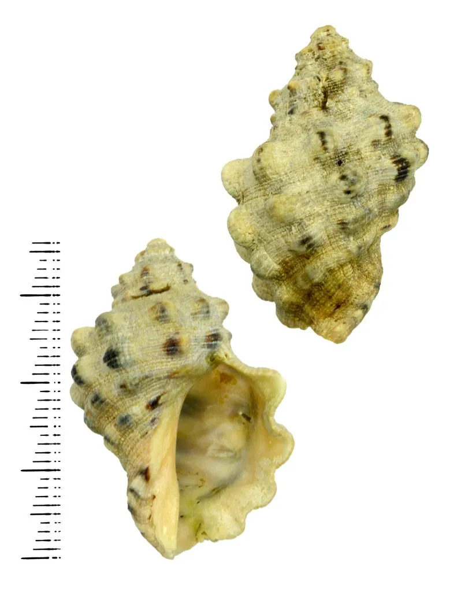

软体动物 · 动物界
黄口荔枝螺 Thais luteostoma

壳面有疣突、壳口鲜黄的中小型骨螺，栖息在岩礁潮间带，钻食牡蛎与藤壶，是贝类养殖的常见敌害。
- 分类
- 门软体动物门纲腹足纲目新腹足目科骨螺科属荔枝螺属
- 栖息环境
- 岩礁海岸潮间带中下区至水深数米的岩石表面，牡蛎与藤壶密集处
- 地理分布
- 中国南北沿海、日本和朝鲜半岛
- 保护级别
- 尚无保护级别；为牡蛎与贻贝养殖的常见敌害
物种志
黄口荔枝螺的贝壳呈卵圆形，壳高三至四厘米，壳质坚厚，螺层约六层，壳面灰褐至黑褐色，布有粗大的疣状突起和深色的斑块，肩部略呈角状。壳口卵圆形，内面鲜黄色至橙黄色，黄口荔枝螺之名由此而来，外唇内侧有齿状突起，前沟短而深。足部宽大，能牢牢吸附在岩石上，遇潮退时缩入壳内。
它分布于中国南北沿海、日本和朝鲜半岛，栖息在岩礁海岸的潮间带中下区至水深数米的岩石表面，尤其喜欢牡蛎和藤壶密集的礁石，常成群聚集。它是肉食性螺类，靠嗅觉找到猎物后用足抱住，以齿舌和酸性分泌物钻穿贝壳取食，是牡蛎和贻贝养殖的主要敌害之一。它雌雄异体，繁殖期在春夏，卵鞘聚集成团附着在岩石上。它尚无保护级别，肉可食用但个体小、肉少，经济价值不高。
形态与习性
- 壳高三至四厘米，卵圆形，壳质坚厚
- 壳面灰褐至黑褐，有粗大疣突与深色斑
- 壳口内面鲜黄色至橙黄色，外唇内侧有齿
- 栖息水层潮间带中下区至水深数米的岩礁
- 食性钻食牡蛎、藤壶与贻贝
- 繁殖春夏产卵鞘，卵鞘成团附着岩石
趣味知识
- 它壳口那圈鲜黄是名字的由来，在灰黑的礁石上很显眼。
- 它抱住牡蛎后慢慢钻孔，养殖户看到空壳就知道它来过。
- 退潮时它缩进壳里贴紧石头，用手抠也要费点劲。